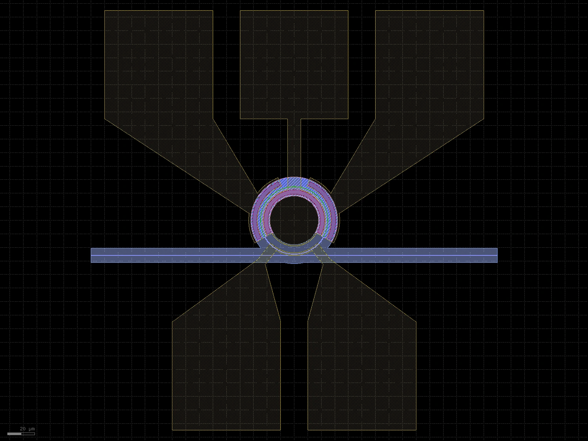
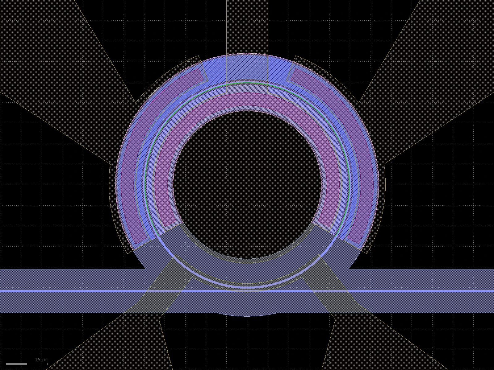

Course front page | Ring modulator simulations
This folder is a complete, self-contained second example of the flow. It takes the same steps as the main example: a technology file, a device builder, a DRC, a process file for the Layer Builder, and simulations of a heater-tuned microring modulator. The process is different. It is CORNERSTONE SOI220A, a real open foundry process, and its data is public.
Status of this example. This folder is kept as released in v0.2. The corrections made to the main example in v0.3 were not ported to it. Its absolute effective index can be off by several 10⁻³, because its mode-solver mesh has no line on every interface. Its heat source is the thermal power boundary condition, not a uniform source in the film. Its capacitance is read as Im(Y)/ω, which is right only when ωRsC ≪ 1. Its resonances are read on the simulation grid. Read the numbers here as those of v0.2, and use the main example as the reference method.
What CORNERSTONE SOI220A is #
CORNERSTONE is an open-source, licence-free silicon photonics foundry at the University of Southampton. Its active platform, SOI220A, is a 220 nm silicon-on-insulator process with three silicon etches, four implants and one aluminium electrode layer. Everything this folder uses comes from two public documents:
- the official PDK repository cornerstone-uos/cornerstone-pdk,
folder
SOI220A: layer names and numbers, per-layer rules, cross-sections and building blocks; - the design guidelines of the 220 nm SOI active MPW call #47 (October 2025): process flow, doping, rules between layers and mask processing.
The source of each number is tagged in the code and in the tables: [YAML] for the PDK
repository, [DG] for the guidelines, [assumed] for a value that the sources do not give.
Where the two public documents disagree, the folder keeps both and says which one it follows.
That is covered in the process tables.
| GDS | official layer name | meaning |
|---|---|---|
| 3/0 | Si_Etch2_LF_120nm |
waveguide core; drawn shapes keep the full 220 nm |
| 5/0 | Si_Etch3_LF_100nm_to_BOX |
rib protect; drawn shapes keep a 100 nm slab |
| 6/0 | Si_Etch1_DUV_DF_70nm |
grating couplers, etched 70 nm |
| 7/0, 8/0 | P_Implant_Low_DF, N_Implant_Low_DF |
low-dose implants that form the junction |
| 9/0, 11/0 | P_Implant_Hi_DF, N_Implant_Hi_DF |
high-dose implants for ohmic contacts |
| 12/0 | Via_DF |
via through the top cladding |
| 13/0 | Electrode_LF |
aluminium electrodes, pads and heater filaments |
GDS 3/0 is drawn at the full core width. The foundry etches the silicon around it, so the layer name and the drawn shape are not the same thing. The table of the process tables explains how each drawn shape becomes a silicon region.
Why this is the second example #
The main example uses a generic process that is built from public sources and has a full back end: three aluminium metals, a titanium-nitride heater, and germanium and nitride layers. CORNERSTONE SOI220A has less. It has one metal layer and no heater layer. Two consequences follow.
- The heater shares the electrode layer. The junction electrodes and the heater are both
drawn in
Electrode_LF, so they cannot overlap. The junction takes the upper 240° of the ring, and the heater takes the lower 76°. After the two leads are subtracted, 17 % of the ring length is heated, against 71 % in the main example. - There is no full back end to teach. The main example shows how a process with several metals is routed to pads. This process has one metal, so there is no routing to show.
Why, then, is it a useful second example? Because it teaches what the generic process cannot. Three things are specific to a real foundry process.
- Official layer names. The layers carry the names of the foundry, and the device code uses them. A layout that a student draws for this process can be checked against the official building blocks.
- Public sources that disagree. The guidelines and the PDK repository give different values for the buried oxide, the top cladding and the electrode gap. The folder shows the table of the disagreement, and states which value it uses and why. A student who learns this habit will need it for every real process.
- Process steps that change the device. The n implant is self-aligned, so the junction sits 110 nm inside the sidewall, not where the mask edge is drawn. The foundry also etches trenches around every waveguide. Both are part of the process, and both are modelled in the code.
The worked example #


Figure 1. The ring modulator on CORNERSTONE SOI220A, as drawn by cornerstone_rm_builder.py.
Left: the whole device, with the three electrode pads of the junction in the north and the
two heater pads in the south (20 µm scale bar). Right: the ring, the coupler and the doped arc
(10 µm scale bar).
The device has a 25 µm radius, a 0.45 µm rib on a 100 nm slab, and a point coupler at the bottom of the ring. The junction takes the upper 240° of the ring, and the heater takes the lower 76°, above the undoped part next to the coupler.
The results come from the six simulation steps. Each value below names the step that produced it. The method and the limits of each step are in the simulation README.
| result | value | from |
|---|---|---|
| power coupling | κ² = 3.73 · exp(−gap / 101.6 nm) | step 1, FDTD |
| effective and group index | 2.5515 and 3.912 | step 2, MODE |
| junction capacitance at 0 V and −4 V | 0.43 and 0.22 fF/µm | step 3, CHARGE |
| heater efficiency | 1.37 K/mW in the heated section | step 4, HEAT |
| modulation efficiency VπL at −2 V | 1.4 V·cm | step 5, MODE |
| gap for critical coupling | 425 nm | step 6, INTERCONNECT |
| loaded Q and free spectral range | 20 900 and 3.90 nm | step 6 |
| resonance shift at −4 V | 50 pm | step 6 |
| thermal tuning | 17.1 pm/mW | step 6 |
Step 6 returns the gap for critical coupling. That value is the default gap of
ring_modulator(), so the layout and the circuit model agree.
The plots of this folder keep the plain style of v0.2. The main example carries the course's figure style, so the figures there are the ones to study first. The plots here are only there to show the results.
Differences from the main example #
| main example (GSiP teaching PDK) | this folder (CORNERSTONE SOI220A) | |
|---|---|---|
| process | a teaching process built from the public GSiP data of Chrostowski and Hochberg and of Baehr-Jones et al. | the official open process of CORNERSTONE, with its official names |
| core and slab | 220 nm core on a 90 nm slab, 6 µm wide | 220 nm core on a 100 nm slab, 14 µm wide |
| ring radius | 10 µm | 25 µm |
| bus and ring width | 0.5 µm rib | 0.45 µm rib |
| default gap | 0.37 µm | 0.42 µm |
| PN section | upper 240°, 67 % of the ring | upper 240°, 67 % of the ring |
| implants | nested N+ / N++ and P+ / P++ masks | low-dose n self-aligned to the sidewall, high-dose contacts |
| metal layers | three aluminium metals and a TiN heater | one aluminium layer, which also carries the heater |
| heater | TiN, 1.6 µm wide, 270°, 280 Ω | aluminium, 2 µm wide, 76°, 0.23 Ω |
| heated part of the ring | 71 % | 17 % |
| waveguide loss used | 2.2 dB/cm, from [BJ] | 4 dB/cm, the upper bound of [DG] Table 4 |
| design-rule check | gsip_drc.py, complete for the back end |
cornerstone_drc.py, a pre-check; the foundry runs the binding DRC |
| simulation steps | seven, starting with a Layer Builder check | six, starting with the coupler |
| process file | compiled from tables, reloaded and compared with them | compiled from tables with the column names of the Ansys template |
The two folders follow the same method. The difference is what the process gives you to work with. The main example is the place to learn the flow with a full back end. This folder shows the same flow on a real process, with its official names and its disagreements.
The files of this folder #
| file | what it does |
|---|---|
| cornerstone_technology.py | The PDK. Layers with the official names, design rules, the layer stack, the cross-sections and the cells. Importing it activates the PDK. |
| cornerstone_drc.py | Design-rule check in pure Python (klayout.db). run_drc(component) returns a result with a passed flag. |
| cornerstone_rm_builder.py | The device: ring_modulator(), built from the PDK cross-sections. Running it writes the GDS and the preview images. |
| rm_ring.gds | The layout that the builder writes, flat, for the Layer Builder. |
| cornerstone_process_file_py/ | The process as CSV tables, the compiler that writes cornerstone_process.lbr, and the compiled file. |
| cornerstone_process_file_py/cornerstone_csv/README.md | Every table and the source of every number, with the known inconsistencies. |
| lumerical_simulations/ring_modulator/ | The six simulation steps, their results, their plots, and the README. |
tests/ |
pytest: the PDK, the layout with its DRC, and the process tables. |
klayout_tech/ |
layers.lyp and tech.lyt for viewing layouts in KLayout. |
pytest.ini |
the test settings of this folder. |
Run it #
The commands run from this folder. The root of the repository holds the Python environment
(uv sync there, once). The layout, the DRC and the tests need no Lumerical.
cd more_processes/cornerstone_soi220a
uv run python cornerstone_technology.py # list the layers and the cross-sections
uv run python cornerstone_rm_builder.py # write rm_ring.gds, the DRC report and the preview images
uv run pytest # the tests of this folder
The simulations need Ansys Lumerical. The commands are in
the simulation README, which also says how
long each step takes. The process file is compiled with
uv run python cornerstone_process_file_py/cornerstone_process_file_compiler.py.
Sources #
- CORNERSTONE, open PDK repository,
SOI220A/process_overview.yaml(v1.2.0) and the cross-section file of the same folder. - CORNERSTONE, Design Guidelines, 220 nm SOI Active MPW #47 (October 2025).
- M. Nedeljkovic, R. Soref and G. Z. Mashanovich, "Free-carrier electrorefraction and electroabsorption modulation predictions for silicon over the 1–14 µm infrared wavelength range", IEEE Photonics Journal 3, 1171 (2011), doi:10.1109/JPHOT.2011.2171930. The Soref-Bennett coefficients of the index perturbation.
- Ansys Optics, Layer builder - Simulation object and Ring Modulator.
- gdsfactory, documentation.
The tags used in the code: [YAML], [DG], [XS] (the cross-section file of the PDK
repository), [MZM] and [HTR] (values measured on the official building blocks, MZM and
heater), and [assumed].
This project is not affiliated with or endorsed by CORNERSTONE, the University of Southampton, Ansys or the gdsfactory team. "Ansys" and "Lumerical" are trademarks of ANSYS, Inc. The values are for teaching and for setting up simulations. Before a tape-out, take every value from the design guidelines of the call you submit to, and run the foundry's own DRC.